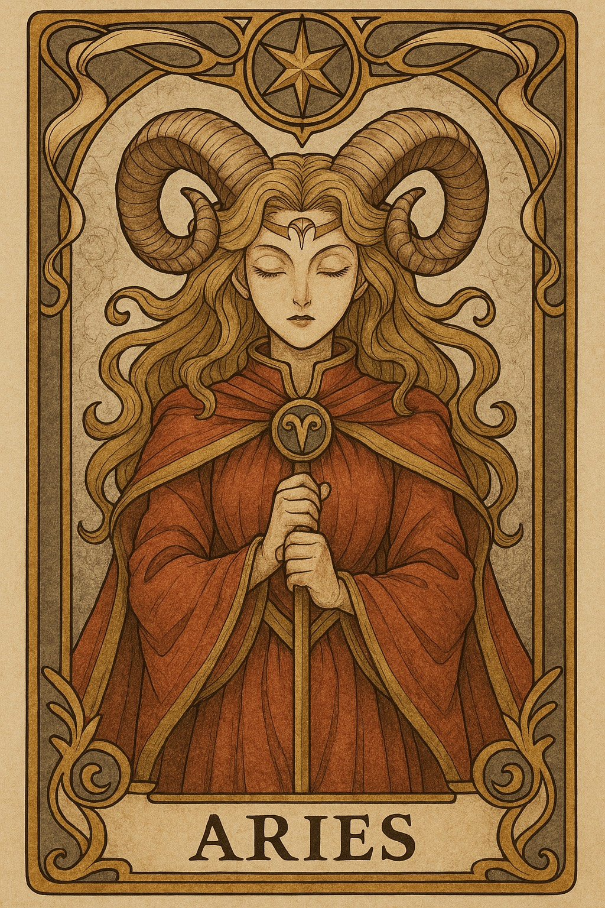
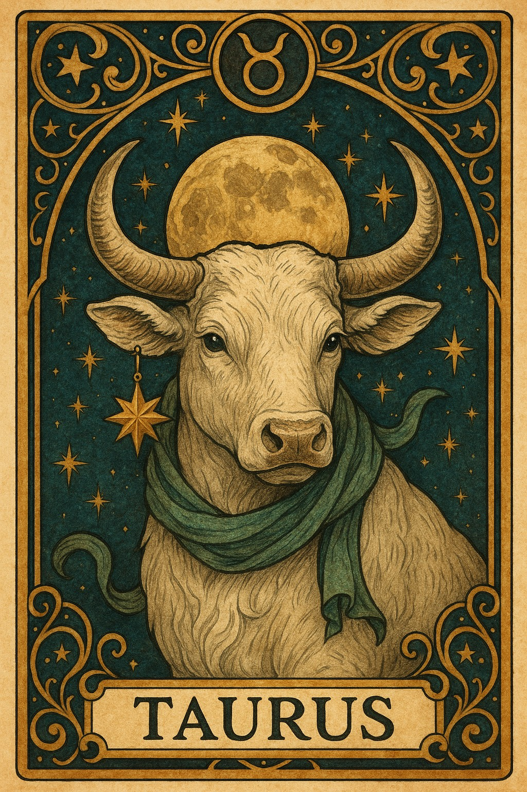
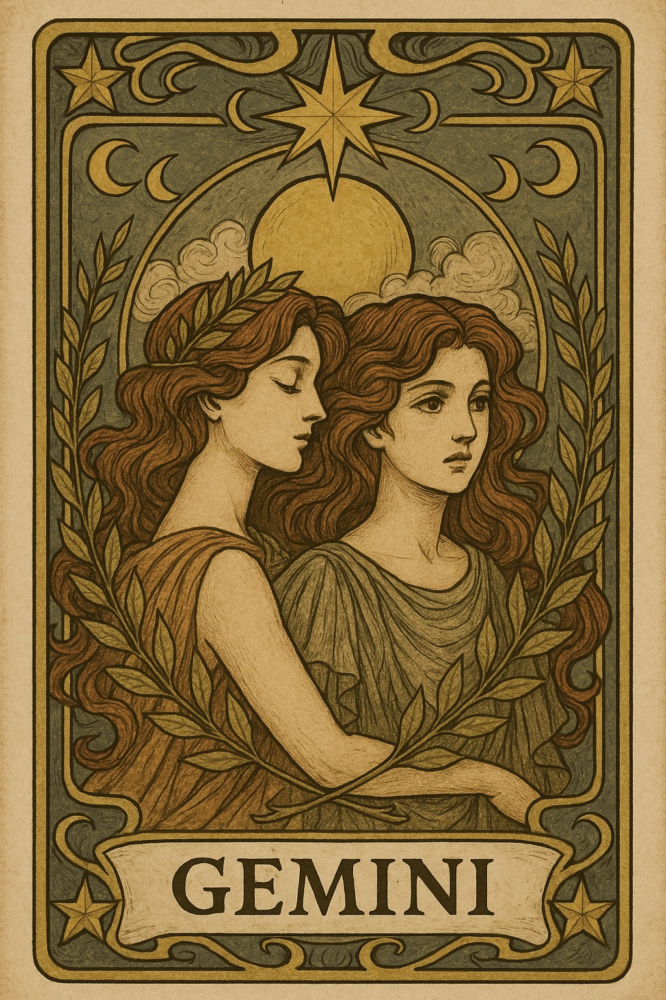
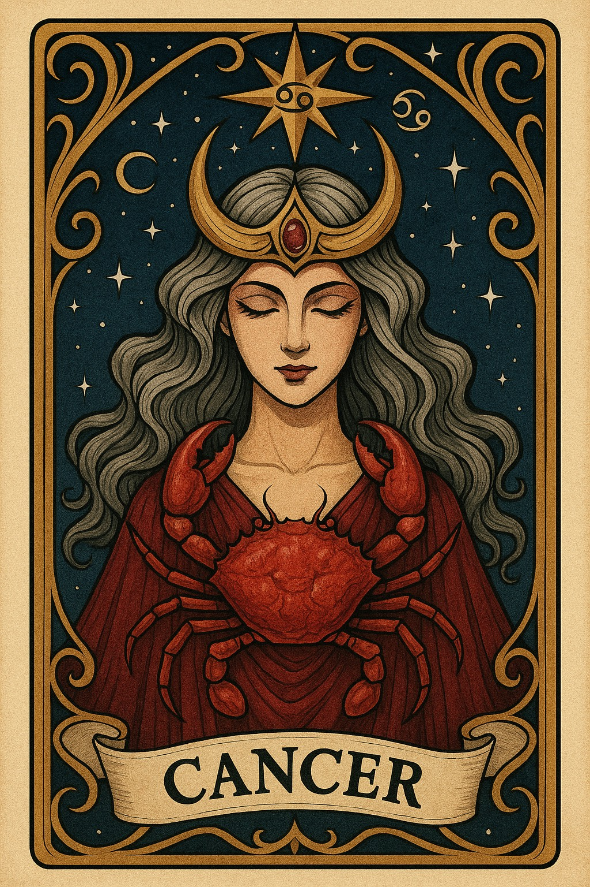
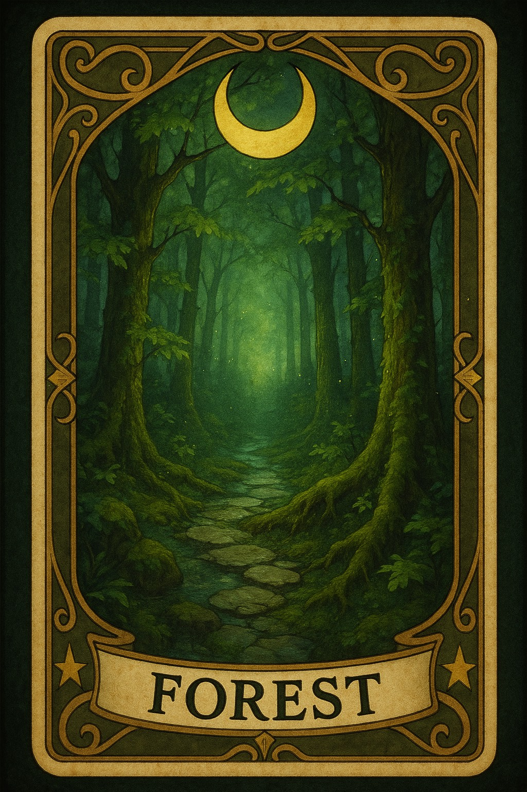
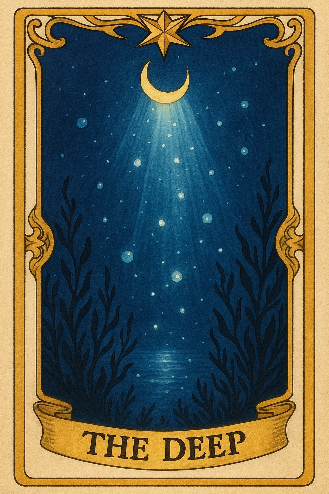
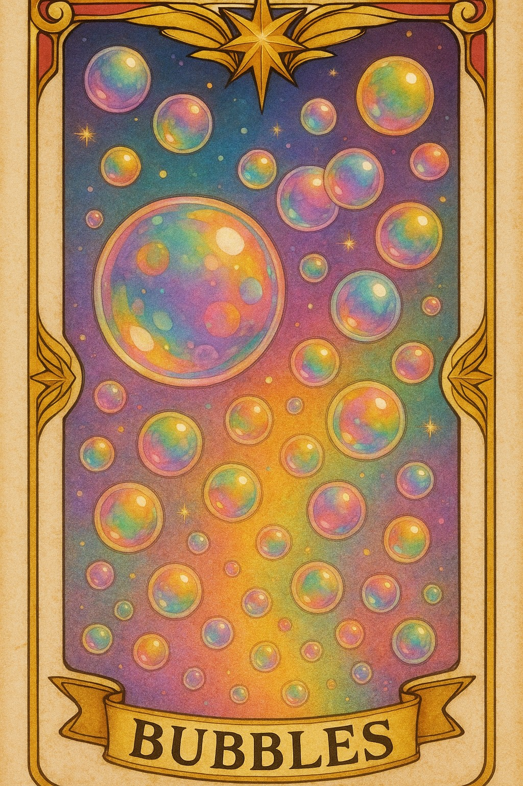
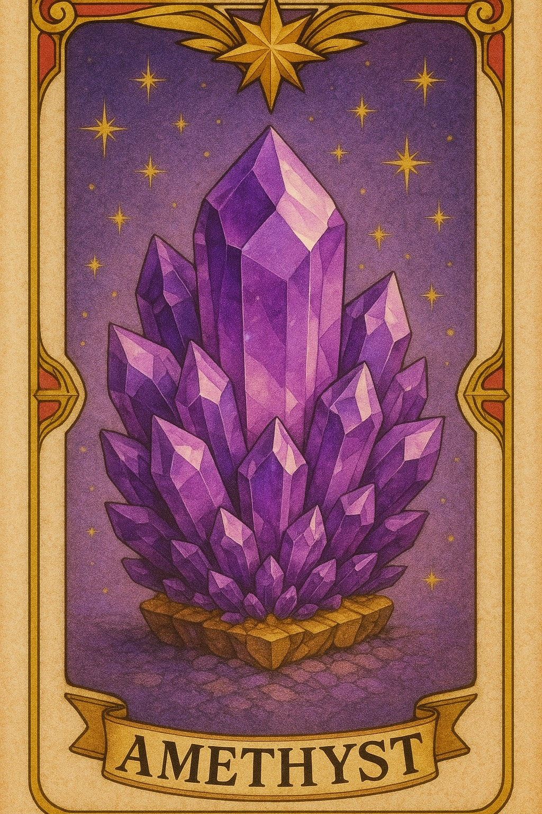
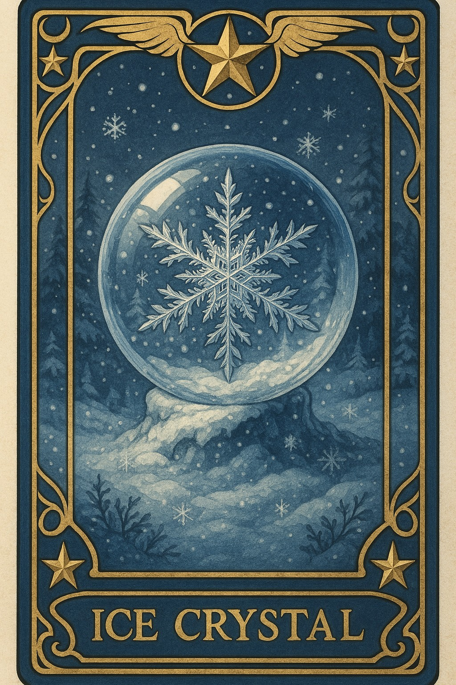
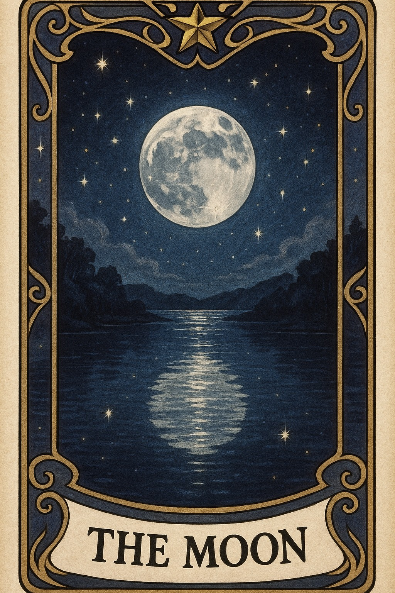

詠粸麗 美甲工作室 心理測驗
測驗一：你的靈魂色彩是什麼？【星座＋直覺題】
Step 1.
選擇你的太陽星座：

牡羊座

金牛座

雙子座

巨蟹座
Step 2.
閉上眼，直覺選一張神秘牌卡：

森林月光

深海光點

彩色氣泡

紫水晶寶石
測驗二：潛意識測色測驗
請看以下四張圖，選擇最吸引你的：
火焰金屬
雨後森林

冰雪玻璃球

月亮湖水倒影
測驗三：你的守護星座女神是誰？
請選擇你最近最常出現的情緒：
天蠍女神
黑月赫卡忒
魔幻渲染、水晶銀箔，黑紫、金屬亮片風格
雙魚女神
夢境女神
貝殼光、乳白琉璃，淡粉、乳白、光澤漸層風格
獅子女神
太陽女王
金箔設計、亮彩跳色，金、桃紅、寶石藍風格
處女女神
自然女神
極簡線條、小花乾燥，奶茶、霧感裸色風格